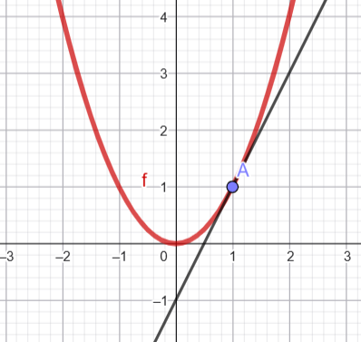
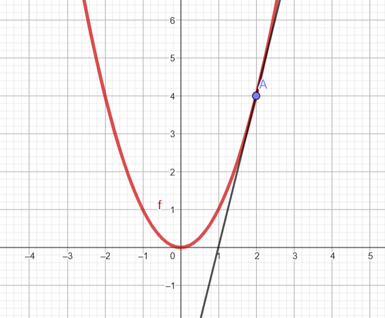
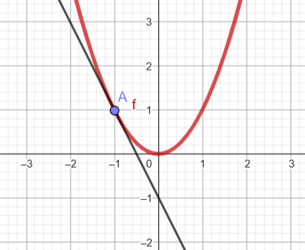
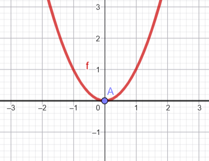

Derivando una primera función \(y=x^2\)
Observa las siguientes imágenes de la gráfica de la función \(y=x^2\). En cada una de ellas aparece dibujada la recta tangente en un punto concreto.
En cada caso, estima a ojo la pendiente de la recta tangente y, por tanto, el valor aproximado de la derivada en ese punto.
-
Punto \(x=1\).

Estima el valor de \(f'(1)\): __________
-
Punto \(x=2\).

Estima el valor de \(f'(2)\): __________
-
Punto \(x=-1\).

Estima el valor de \(f'(-1)\): __________
-
Punto \(x=0\).

Estima el valor de \(f'(0)\): __________
Recoge ahora tus resultados en la siguiente tabla:
| \(x\) | \(-1\) | \(0\) | \(1\) | \(2\) |
|---|---|---|---|---|
| \(f'(x)\) |
A partir de estos valores, responde:
- ¿Qué relación observas entre el valor de \(x\) y el valor de la derivada?
- Completa la frase: “Parece que la derivada de \(x^2\) en un punto \(x\) es __________”.
- Conjetura una fórmula para la función derivada de \(f(x)=x^2\).
Conclusión: ___________________________________________